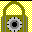

FAIF - Flight Agency Interface Function
Summary :
 1. The environment variables FAIF_ROOTPATH and FAIF_BINPATH
1. The environment variables FAIF_ROOTPATH and FAIF_BINPATH
 2. The FAIF directory structure
2. The FAIF directory structure
3. FAIF executables and scripts
4. FAIF config files

5. Password Encryption
6. FAIF program execution
7. Monitoring FAIF
8. Nominal Operations
9. Changing the crontab file
10. Unrecognized files
11. Shutting down FAIF
1. The environment variables FAIF_ROOTPATH and FAIF_BINPATH.
Both of these environment variables are normally set via set_env.csh, which should be referenced in the FAIF operator's .cshrc file, like this:
>source set_env.csh
FAIF_ROOTPATH is an environment variable whose value must be set to the
root of the FAIF working directory tree in which reception directories,
default configuration files and temporary FTP files are to be stored.
Example setting of FAIF_ROOTPATH:
>setenv FAIF_ROOTPATH /LOCAL/R2.1.2/faif
FAIF_BINPATH is an environment variable whose value must be set to the
name of the directory where FAIF executables and scripts are found. Note
that all scripts and programs must stored in the same directory.
FAIF_BINPATH is normally set to /ASF/Rxx/bin for Release Rxx.
Example setting of FAIF_BINPATH:
>setenv FAIF_BINPATH /ASF/R2.1.2/bin
2. The FAIF directory structure.
The FAIF working directory tree which includes reception, FTP and other
subdirectories. The directory structure is built under the top directory
which is specified by the value of the environment variable FAIF_ROOTPATH.
The FAIF working directory tree comprises of the following:
- reception directories where flight agencies will deposit files into,
- directories for storing FTP temporary files,
- a directory for holding encrypted password,
- a directory for generated shell scripts,
- directories for default config files,
Details are here.
Under $FAIF_ROOTPATH, ESA/, NASDA/, WALPS/, and CSA/CSA_XXX/
are the reception directories. Notice that each agency's directory also has a
config and a log directory for storing default configuration and log files,
respectively.
$FAIF_ROOTPATH/FTP/stmp/ is used by the FTP send script FAIF_ftpsend.csh
for storing temporary files while $FAIF_ROOTPATH/gtmp/ is used by the FTP get
scripts CSA_ftpget.csh, ESA_ftpget.csh, and J1_ftpget.csh.
The $FAIF_ROOTPATH/FTP/upw/ directory is used to store encrypted password files
- encrypted usernames and passwords are written to files which are stored
here by the FAIF_encrypt program.
/local/faif/config/ is used to store the FAIF crontab and the
FAxmitserver configuration file.
/local/etc/ is used to store documentation for the FAIF programs delivered.
Directories under /local/etc/ contain FAIF documents such as the Release
Description Document (RDD). $FAIF_ROOTPATH/etc/html/ contains files
for this FAIF Hypertext document.
3. FAIF executables and scripts
Below are the names of the programs and scripts used in FAIF:
ESAdirmon
NASDAdirmon
WALPSdirmon
CSAgetfile
CSAgetfile_all
idCSAfilename
CSAPredOrRes
CSA_ftpget.csh
J1_ftpget.csh
J1_ftpget_all.csh
ESA_ftpget.csh
ESA_ftpget_all.csh
FAIF_UNIX_ftpsend.csh
FAIF_VAX_ftpsend.csh
FAxmitserver
faif_xmitClient
FAIF_encrypt
Other supporting utilities must also be installed on the system for proper
functioning of the above programs:
uuidgen - DCE provided uuid generator program
ftp - Unix FTP program
4. FAIF config files.
The FAIF programs require additional environment variables that are defined
in config files. The default config files listed below are part of the
delivered FAIF system. Although they may be modified if necessary, using
the default config files will simplify execution of the programs.
The delivered versions of the config files should only rarely need any
modification. Any changes should be thoroughly tested; mistakes in the config
files can cause many serious operational problems.
The configuration files reference directories beneath FAIF_ROOTPATH.
If you are not using the default config files, you should check that all
referenced directories actually exist prior to program execution.
Config filename Program
--------------- -------
$FAIF_ROOTPATH/CSA/config/CSAgetfile.config (CSAgetfile)
$FAIF_ROOTPATH/ESA/config/ESAdirmon.config (ESAdirmon)
$FAIF_ROOTPATH/NASDA/config/NASDAdirmon.config (NASDAdirmon)
$FAIF_ROOTPATH/WALPS/config/WALPSdirmon.config (WALPSdirmon)
$FAIF_ROOTPATH/config/FAxmitserver.config (FAxmitserver)
5. Password Encryption.
All FAIF interfaces which use FTP need access to password information. All
passwords are encrypted in FAIF using the FAIF_encrypt program. Prior to
running FAIF programs, you must run FAIF_encrypt. If FAIF_encrypt has been
previously performed, the appropriate password file in $FAIF_ROOTPATH/FTP/upw
must be removed if you decide to change the password information and run
FAIF_encrypt again.
Usage:
>$FAIF_BINPATH/FAIF_encrypt -i interface
where interface is the interface for which the password information
is intended. Below are valid values for interface. After giving the
FAIF_encrypt command, you will be prompted for the username and
password.
ESA - FAIF/ESA for inbound and outbound files
(Requires the ESA username and password)
NASDA - FAIF/NASDA for inbound and outbound files
(Requires the NASDA username and password)
WALPS - FAIF to Wallops (Requires the Wallops username and password)
CSA_ufdrf_F - FAIF/CSA UFDRF for Fairbanks inbound and outbound
(Requires the appropriate CSA username and password)
CSA_ufcal_F - FAIF/CSA UFCAL for Fairbanks inbound and outbound
(Requires the appropriate CSA username and password)
CSA_ufdroc_F - FAIF/CSA UFDROC for Fairbanks inbound and outbound
(Requires the appropriate CSA username and password)
CSA_ufdrf_M - FAIF/CSA UFDRF for McMurdo inbound and outbound
(Requires the appropriate CSA username and password)
CSA_ufcal_M - FAIF/CSA UFCAL for McMurdo inbound and outbound
(Requires the appropriate CSA username and password)
CSA_ufdroc_M - FAIF/CSA UFDROC for McMurdo inbound and outbound
(Requires the appropriate CSA username and password)
6. FAIF program execution
FAIF programs are run via cron. After all set-up is complete, the FAIF crontab
file can be established by the following command:
>crontab $FAIF_ROOTPATH/config/crontab.default
FAIF consists of several separate programs, and this command establishes
a crontab file that will run each of them periodically. FAIF uses the
cron daemon to schedule these according to the specified crontab file.
7. Monitoring FAIF
FAIF reports most of its activities via syslog. This is the main
starting point for monitoring and trouble-shooting FAIF. Monitoring syslog at
least daily is strongly recommended.
For each flight agency, FAIF also maintains a log of incoming files it handles.
These are in the log sub-directories. FAIF's FTP activity is reported in the
sub-directories under FTP. (These are only kept a short time; they are re-used
for subsequent FTP sessions.) See trouble-shooting FAIF for more information.
8. Nominal Operations
In normal operation, FAIF runs by itself. The way files from the foreign flight
agencies reach ASF varies:
- For ERS-1 and ERS-2, FAIF retrieves files from ESA on a schedule set
by the crontab file, and deletes the files from the ESA host computer once
they are safely in hand at ASF.
- For JERS-1, FAIF retrieves files from NASDA on a schedule set
by the crontab file.
- For RADARSAT, FAIF retrieves files from CSA on a schedule
set by the crontab file, and deletes the files from the CSA host computer once
they are safely in hand at ASF.
Once they are in the local reception directories, FAIF's directory monitors
perform any needed translations, construct meta-data, route the files as
specified in the config files, and archive them in IMS.
9. Changing the crontab file.
To examine the active crontab file, use the command:
>crontab -l
Standard unix and crontab commands can be used to change FAIF's program
execution schedule by adjusting the crontab file. This can be done by
(a) writing a new crontab file, or
(b) editing a crontab file which is in use
(a) You may write a new crontab file (perhaps starting from
/local/faif/crontab.default, if you wish). To put it to use, simply
use it in the command:
>crontab my_crontab_file
The changes will take effect immediately.
(b) You can edit the active crontab file by using the command:
>crontab -e
(This will invoke the editor specified by the EDITOR environment
variable, so you should check that first.)
Lines that begin with # are comment lines and are ignored by the cron
daemon. Commenting lines in the active crontab file is an easy way to
"turn off" particular FAIF executables.
The changes will take effect immediately.
10. Note on unrecognized files
Note that files that cannot be identified by the FAIF directory
monitors remain in the reception directories. They are not automatically
deleted. They are reported in the FAIF syslog
repeatedly until removed by manual intervention.
11. Shutting down FAIF
Because FAIF involves multiple executable files, shell scripts, lock files,
semaphores, and interactions with other local and remote computers, shutting
down FAIF should be down in a careful manner.
Details are here.
Jet Propulsion Laboratory, 4800 Oak Grove Drive, Pasadena, CA. 91109-8099
Send
feedback
Last Modified: February, 1998
Copyright (c) 1996, 1997, 1998, California Institute of Technology.
ALL RIGHTS RESERVED. U.S. Government Sponsorship acknowledged.